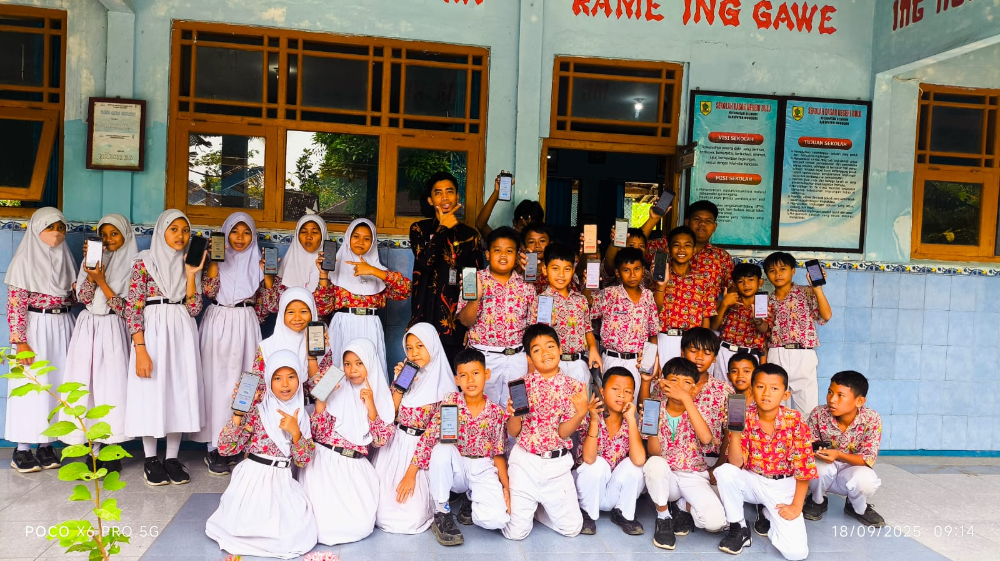

Selamat datang di portofolio digital saya. Sebagai seorang pendidik, saya berkomitmen untuk menciptakan lingkungan belajar yang **inspiratif dan inovatif** yang berfokus pada pengembangan **Profil Pelajar Pancasila**. Di sini, saya mendokumentasikan berbagai perangkat ajar, kegiatan kokurikuler, dan momen-momen penting dalam perjalanan saya mendidik generasi penerus bangsa.
Dokumentasi pelaksanaan kegiatan kokurikuler yang bertujuan untuk mengembangkan karakter dan kompetensi siswa di luar kelas.
Proyek 1: "Rekayasa dan Teknologi - Mencari Manfaat Dari Internet"

Siswa belajar mencari pengalaman berharga, mengidentifikasi sumber informasi terpercaya, dan menerapkan etika digital. Proyek ini melatih nalar kritis dan kreativitas mereka.